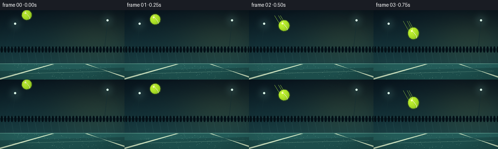
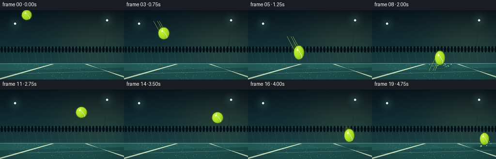
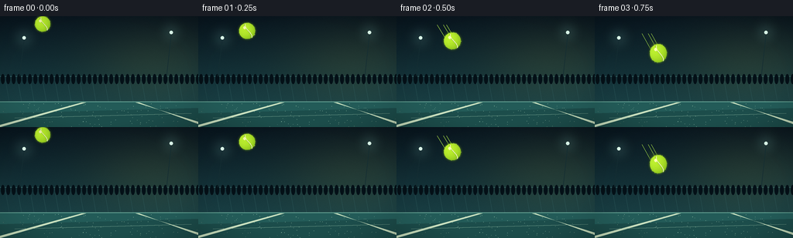
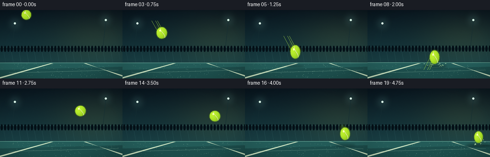
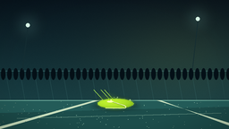
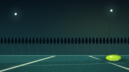
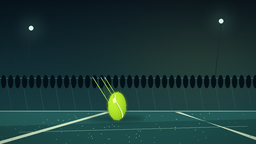

CODING AGENTS AS PIXEL WORLD MODELS
traex/GPT-5.6-Sol · phygen_028
点击播放 · 原生 RGB 像素
逐轮保存的候选
回放视频、检查图与代码变化。
每份候选均可单独播放。实际图片检查记录在下方工具轨迹中。
候选 01播放与检查图
点击播放 · 原生 RGB 像素


展开代码变化
--- 上一保存版本
+++ 本次保存版本
@@ -0,0 +1,209 @@
+from pathlib import Path
+import json, math
+import numpy as np
+from PIL import Image, ImageDraw, ImageFilter
+import artifact_io
+
+CASE = Path(__file__).resolve().parent
+SPEC = json.loads((CASE/'task_spec.json').read_text())
+W,H,N = SPEC['width'], SPEC['height'], SPEC['frames']
+S = 4
+rng = np.random.default_rng(2801)
+
+# Sub-pixel-friendly helpers (everything is rendered 4x and downsampled).
+def scbox(b): return tuple(int(round(v*S)) for v in b)
+def pts(p): return [(int(round(x*S)),int(round(y*S))) for x,y in p]
+def line(draw, p, fill, width=1): draw.line(pts(p), fill=fill, width=max(1,int(width*S)), joint='curve')
+def ellipse(draw,b,fill,outline=None,width=1): draw.ellipse(scbox(b),fill=fill,outline=outline,width=max(1,int(width*S)))
+def polygon(draw,p,fill): draw.polygon(pts(p),fill=fill)
+
+def ball_state(f):
+ # A deliberately forceful first impact, then a high elastic rebound and smaller second impact.
+ states = [
+ (55,10,10,10),(63,19,10.5,10.5),(72,32,11,11),(82,48,11,12),
+ (93,67,10.5,13),(105,88,10,14),(117,106,9,14),
+ (129,115.5,20,5.5),(140,99,10,14),(150,76,11,12),(159,58,11,11),
+ (168,47,11,11),(177,43,11,11),(185,47,11,11),(193,58,11,11),
+ (201,75,10.5,12),(209,95,10,13),(217,108,9.5,12),
+ (225,115.5,15,5.5),(232,102,9,12)
+ ]
+ return states[f]
+
+def add_glow(base, center, radius, color, alpha):
+ glow=Image.new('RGBA',base.size,(0,0,0,0)); d=ImageDraw.Draw(glow)
+ x,y=center; d.ellipse(scbox((x-radius,y-radius,x+radius,y+radius)),fill=(*color,alpha))
+ glow=glow.filter(ImageFilter.GaussianBlur(radius*S*.55))
+ return Image.alpha_composite(base,glow)
+
+def draw_background(f):
+ # Slight impact shake conveys force without destroying spatial continuity.
+ shake_y = 1.0 if f==7 else (-0.4 if f==8 else 0)
+ h4,w4=H*S,W*S
+ yy,xx=np.mgrid[0:h4,0:w4]
+ yn=yy/(h4-1); xn=xx/(w4-1)
+ # Deep cinematic teal stadium atmosphere.
+ top=np.array([8,21,30.]); bottom=np.array([24,61,66.])
+ t=np.minimum(1,yn/0.76)[...,None]
+ arr=top*(1-t)+bottom*t
+ warm=np.exp(-((xn-.78)**2/.12+(yn-.43)**2/.13))[...,None]
+ arr += warm*np.array([18,15,3.])
+ # fine film grain, fixed spatially to avoid distracting flicker
+ noise=np.random.default_rng(100).normal(0,1.25,(h4,w4,1))
+ arr=np.clip(arr+noise,0,255).astype(np.uint8)
+ im=Image.fromarray(arr,'RGB').convert('RGBA')
+ d=ImageDraw.Draw(im,'RGBA')
+ sy=shake_y
+ # Distant fence / horizontal stadium structure, tastefully out of focus.
+ line(d,[(0,78+sy),(256,78+sy)],(75,128,127,80),.7)
+ for x in range(-10,280,16):
+ line(d,[(x,78+sy),(x+6,112+sy)],(52,99,100,35),.45)
+ # Dark spectator silhouettes and soft colored bokeh.
+ for x in range(3,256,7):
+ hh=3+((x*13)%7)
+ ellipse(d,(x-2,82-hh+sy,x+3,88+sy),(4,16,23,75))
+ # Stadium lamps with bloom.
+ for lx,ly in [(31,28),(221,21)]:
+ im=add_glow(im,(lx,ly),15,(150,224,211),42)
+ d=ImageDraw.Draw(im,'RGBA')
+ ellipse(d,(lx-2.2,ly-2.2,lx+2.2,ly+2.2),(224,255,239,210))
+ line(d,[(lx,ly+3),(lx-6,78)],(20,45,50,100),.75)
+ # Court starts at a crisp horizon near the contact plane.
+ d=ImageDraw.Draw(im,'RGBA')
+ polygon(d,[(0,111+sy),(256,111+sy),(256,144),(0,144)],(35,91,88,255))
+ # layered court shading
+ polygon(d,[(0,126),(256,119),(256,144),(0,144)],(28,77,75,145))
+ line(d,[(0,111+sy),(256,111+sy)],(124,192,172,105),.75)
+ # Perspective court markings direct the eye toward impact.
+ polygon(d,[(0,141),(0,144),(111,112),(105,112)],(202,225,191,170))
+ polygon(d,[(256,137),(256,140),(180,112),(175,112)],(202,225,191,135))
+ line(d,[(19,132),(247,126)],(171,213,183,62),.65)
+ # surface micro texture
+ for i in range(115):
+ x=int(rng.integers(0,256)); y=float(rng.uniform(113,144)); a=int(rng.integers(12,40))
+ ellipse(d,(x,y,x+rng.uniform(.2,.65),y+rng.uniform(.12,.38)),(164,207,181,a))
+ return im
+
+def draw_shadow(im,f,x,ry):
+ d=ImageDraw.Draw(im,'RGBA')
+ dist=max(0,115.5-(ball_state(f)[1]+ry))
+ strength=int(115*math.exp(-dist/22))
+ wid=12+16*math.exp(-dist/15)
+ sh=Image.new('RGBA',im.size,(0,0,0,0)); sd=ImageDraw.Draw(sh,'RGBA')
+ ellipse(sd,(x-wid,116.5,x+wid,120.5),(0,10,10,strength))
+ sh=sh.filter(ImageFilter.GaussianBlur(2.2*S))
+ im.alpha_composite(sh)
+
+def draw_speed_trail(im,f):
+ if f==0: return
+ x,y,rx,ry=ball_state(f)
+ xp,yp,_,_=ball_state(f-1)
+ vx=x-xp; vy=y-yp
+ # Strong, long translucent streak on forceful descent and immediately after rebound.
+ amount = 5 if 3<=f<=8 else (3 if f in (9,10,16,17,19) else 1)
+ layer=Image.new('RGBA',im.size,(0,0,0,0)); d=ImageDraw.Draw(layer,'RGBA')
+ for j in range(amount,0,-1):
+ q=j/(amount+1)
+ cx=x-vx*q*.9; cy=y-vy*q*.9
+ a=int(15+20*(1-q))
+ rr=max(5,rx*(.62-.05*q)); rry=max(5,ry*(.62-.05*q))
+ ellipse(d,(cx-rr,cy-rry,cx+rr,cy+rry),(170,238,43,a))
+ layer=layer.filter(ImageFilter.GaussianBlur(2.3*S))
+ im.alpha_composite(layer)
+ # Fine lime velocity filaments.
+ d=ImageDraw.Draw(im,'RGBA')
+ if 2<=f<=8:
+ for off in (-5,3,7):
+ line(d,[(x-rx*.3+off,y-ry*.2),(x-vx*1.6+off,y-vy*1.6)],(192,255,79,70),.5)
+
+def draw_impact(im,f,x):
+ d=ImageDraw.Draw(im,'RGBA')
+ if f not in (6,7,8,17,18,19): return
+ main = f in (7,18)
+ phase = {6:.22,7:1,8:.64,17:.18,18:.72,19:.42}[f]
+ # Contact glow and expanding elliptical shock ring across the court.
+ ring=Image.new('RGBA',im.size,(0,0,0,0)); rd=ImageDraw.Draw(ring,'RGBA')
+ rad=(8 + (0 if main else (16 if f in (8,19) else 2)))*phase + (8 if main else 0)
+ ellipse(rd,(x-rad,116.8-rad*.12,x+rad,119.2+rad*.12),None,(193,244,170,int(125*phase)),.8)
+ if main:
+ ellipse(rd,(x-7,115.8,x+7,120.2),(187,255,91,40))
+ ring=ring.filter(ImageFilter.GaussianBlur(.45*S)); im.alpha_composite(ring)
+ d=ImageDraw.Draw(im,'RGBA')
+ # Tiny surface grit launched radially, deterministic and frame coherent.
+ if f in (7,8,18,19):
+ age=0 if f in (7,18) else 1
+ count=20 if f<10 else 11
+ rrng=np.random.default_rng(909 if f<10 else 1818)
+ for k in range(count):
+ ang=rrng.uniform(math.pi*.08,math.pi*.92)
+ speed=rrng.uniform(5,22)*(1+age*.45)
+ dx=math.cos(ang)*speed; dy=-math.sin(ang)*speed*.42 + age*3
+ px=x+dx; py=117+dy
+ r=rrng.uniform(.35,.8)
+ ellipse(d,(px-r,py-r,px+r,py+r),(184,222,178,int(175/(age+1))))
+ if age:
+ line(d,[(px,py),(px-dx*.12,py-dy*.12)],(178,231,153,90),.45)
+ if f==7:
+ # Short contact burst lines make the single impact frame unmistakable.
+ for ang in np.linspace(math.pi*.1,math.pi*.9,11):
+ l=12 + 5*math.sin(ang*4.1)**2
+ line(d,[(x+math.cos(ang)*8,117-math.sin(ang)*2),
+ (x+math.cos(ang)*l,117-math.sin(ang)*l*.34)],(205,255,142,110),.65)
+
+def draw_ball(im,f):
+ x,y,rx,ry=ball_state(f)
+ draw_shadow(im,f,x,ry)
+ draw_speed_trail(im,f)
+ draw_impact(im,f,x)
+ # Soft external halo / fuzzy nap.
+ halo=Image.new('RGBA',im.size,(0,0,0,0)); hd=ImageDraw.Draw(halo,'RGBA')
+ ellipse(hd,(x-rx-1.6,y-ry-1.6,x+rx+1.6,y+ry+1.6),(172,245,36,85))
+ halo=halo.filter(ImageFilter.GaussianBlur(1.5*S)); im.alpha_composite(halo)
+ # Gradient-filled elastic ellipsoid using a high-res per-pixel normal field.
+ yy,xx=np.mgrid[0:H*S,0:W*S]
+ nx=(xx/S-x)/rx; ny=(yy/S-y)/ry
+ inside=nx*nx+ny*ny<=1
+ z=np.sqrt(np.clip(1-nx*nx-ny*ny,0,1))
+ # light from upper-left, with saturated chartreuse body and darker contact side
+ light=np.clip(.42 + .57*(z*.72-nx*.35-ny*.32),0,1)
+ r=(114+83*light); g=(170+78*light); b=(19+31*light)
+ ball=np.zeros((H*S,W*S,4),dtype=np.uint8)
+ ball[...,0]=np.clip(r,0,255); ball[...,1]=np.clip(g,0,255); ball[...,2]=np.clip(b,0,255)
+ ball[...,3]=inside.astype(np.uint8)*255
+ tex=np.random.default_rng(72).normal(0,3.0,(H*S,W*S))
+ for c in range(3): ball[...,c]=np.clip(ball[...,c].astype(float)+tex*inside,0,255)
+ im.alpha_composite(Image.fromarray(ball,'RGBA'))
+ d=ImageDraw.Draw(im,'RGBA')
+ # Tennis-ball curved white seam, itself deformed by squash/stretch.
+ seam=[]
+ for t in np.linspace(-1.15,1.15,34):
+ lx=.42*math.sin(t*1.6)+.16
+ ly=t*.72
+ seam.append((x+lx*rx,y+ly*ry))
+ line(d,seam,(239,247,191,225),1.15)
+ line(d,[(a[0]-rx*.07,a[1]) for a in seam],(80,117,19,85),.4)
+ # Highlight and lower bounce-light rim.
+ ellipse(d,(x-rx*.48,y-ry*.58,x-rx*.13,y-ry*.22),(250,255,176,150))
+ # sparse fibers around silhouette (fuzzy tennis felt)
+ rrng=np.random.default_rng(500+f)
+ for k in range(28):
+ a=rrng.uniform(0,math.tau)
+ px=x+math.cos(a)*rx; py=y+math.sin(a)*ry
+ ext=rrng.uniform(.25,.75)
+ line(d,[(px,py),(px+math.cos(a)*ext,py+math.sin(a)*ext)],(204,251,81,100),.32)
+ # compressed contact patch
+ if f in (7,18):
+ line(d,[(x-rx*.56,120.5),(x+rx*.56,120.5)],(235,255,159,185),.75)
+
+def render(f):
+ im=draw_background(f)
+ draw_ball(im,f)
+ # A restrained vignette adds depth and directs attention.
+ yy,xx=np.mgrid[0:H*S,0:W*S]; nx=(xx/(W*S)-.5)/.72; ny=(yy/(H*S)-.52)/.75
+ vig=np.clip((nx*nx+ny*ny-.35)*60,0,38).astype(np.uint8)
+ shade=np.zeros((H*S,W*S,4),dtype=np.uint8); shade[...,3]=vig
+ im=Image.alpha_composite(im,Image.fromarray(shade,'RGBA'))
+ im=im.convert('RGB').resize((W,H),Image.Resampling.LANCZOS)
+ return np.asarray(im,dtype=np.uint8)
+
+frames=np.stack([render(i) for i in range(N)],axis=0)
+artifact_io.save(frames,CASE)
候选 02播放与检查图
点击播放 · 原生 RGB 像素


展开代码变化
--- 上一保存版本
+++ 本次保存版本
@@ -78,9 +78,11 @@
polygon(d,[(256,137),(256,140),(180,112),(175,112)],(202,225,191,135))
line(d,[(19,132),(247,126)],(171,213,183,62),.65)
# surface micro texture
+ # Re-seed this spatial texture per frame: material detail stays attached to the court.
+ trng=np.random.default_rng(2801)
for i in range(115):
- x=int(rng.integers(0,256)); y=float(rng.uniform(113,144)); a=int(rng.integers(12,40))
- ellipse(d,(x,y,x+rng.uniform(.2,.65),y+rng.uniform(.12,.38)),(164,207,181,a))
+ x=int(trng.integers(0,256)); y=float(trng.uniform(113,144)); a=int(trng.integers(12,40))
+ ellipse(d,(x,y,x+trng.uniform(.2,.65),y+trng.uniform(.12,.38)),(164,207,181,a))
return im
def draw_shadow(im,f,x,ry):
可观测工具轨迹
实际执行的命令与返回图片。
命令 1exit 0
/bin/bash -lc "cat prompt.txt && printf '\\n--- GENERATION_RULES.md ---\\n' && cat GENERATION_RULES.md"
命令 2exit 0
/bin/bash -lc "cat task_spec.json && printf '\\n--- files ---\\n' && find . -maxdepth 2 -type f -printf '%p\\n' | sort"
命令 3exit 0
/bin/bash -lc "sed -n '1,240p' artifact_io.py"
命令 4exit 0
/bin/bash -lc "cat > generate.py <<'PY'
from pathlib import Path
import json, math
import numpy as np
from PIL import Image, ImageDraw, ImageFilter
import artifact_io
CASE = Path(__file__).resolve().parent
SPEC = json.loads((CASE/'task_spec.json').read_text())
W,H,N = SPEC['width'], SPEC['height'], SPEC['frames']
S = 4
rng = np.random.default_rng(2801)
# Sub-pixel-friendly helpers (everything is rendered 4x and downsampled).
def scbox(b): return tuple(int(round(v*S)) for v in b)
def pts(p): return [(int(round(x*S)),int(round(y*S))) for x,y in p]
def line(draw, p, fill, width=1): draw.line(pts(p), fill=fill, width=max(1,int(width*S)), joint='curve')
def ellipse(draw,b,fill,outline=None,width=1): draw.ellipse(scbox(b),fill=fill,outline=outline,width=max(1,int(width*S)))
def polygon(draw,p,fill): draw.polygon(pts(p),fill=fill)
def ball_state(f):
# A deliberately forceful first impact, then a high elastic rebound and smaller second impact.
states = [
(55,10,10,10),(63,19,10.5,10.5),(72,32,11,11),(82,48,11,12),
(93,67,10.5,13),(105,88,10,14),(117,106,9,14),
(129,115.5,20,5.5),(140,99,10,14),(150,76,11,12),(159,58,11,11),
(168,47,11,11),(177,43,11,11),(185,47,11,11),(193,58,11,11),
(201,75,10.5,12),(209,95,10,13),(217,108,9.5,12),
(225,115.5,15,5.5),(232,102,9,12)
]
return states[f]
def add_glow(base, center, radius, color, alpha):
glow=Image.new('RGBA',base.size,(0,0,0,0)); d=ImageDraw.Draw(glow)
x,y=center; d.ellipse(scbox((x-radius,y-radius,x+radius,y+radius)),fill=(*color,alpha))
glow=glow.filter(ImageFilter.GaussianBlur(radius*S*.55))
return Image.alpha_composite(base,glow)
def draw_background(f):
# Slight impact shake conveys force without destroying spatial continuity.
shake_y = 1.0 if f==7 else (-0.4 if f==8 else 0)
h4,w4=H*S,W*S
yy,xx=np.mgrid[0:h4,0:w4]
yn=yy/(h4-1); xn=xx/(w4-1)
# Deep cinematic teal stadium atmosphere.
top=np.array([8,21,30.]); bottom=np.array([24,61,66.])
t=np.minimum(1,yn/0.76)[...,None]
arr=top*(1-t)+bottom*t
warm=np.exp(-((xn-.78)**2/.12+(yn-.43)**2/.13))[...,None]
arr += warm*np.array([18,15,3.])
# fine film grain, fixed spatially to avoid distracting flicker
noise=np.random.default_rng(100).normal(0,1.25,(h4,w4,1))
arr=np.clip(arr+noise,0,255).astype(np.uint8)
im=Image.fromarray(arr,'RGB').convert('RGBA')
d=ImageDraw.Draw(im,'RGBA')
sy=shake_y
# Distant fence / horizontal stadium structure, tastefully out of focus.
line(d,[(0,78+sy),(256,78+sy)],(75,128,127,80),.7)
for x in range(-10,280,16):
line(d,[(x,78+sy),(x+6,112+sy)],(52,99,100,35),.45)
# Dark spectator silhouettes and soft colored bokeh.
for x in range(3,256,7):
hh=3+((x*13)%7)
ellipse(d,(x-2,82-hh+sy,x+3,88+sy),(4,16,23,75))
# Stadium lamps with bloom.
for lx,ly in [(31,28),(221,21)]:
im=add_glow(im,(lx,ly),15,(150,224,211),42)
d=ImageDraw.Draw(im,'RGBA')
ellipse(d,(lx-2.2,ly-2.2,lx+2.2,ly+2.2),(224,255,239,210))
line(d,[(lx,ly+3),(lx-6,78)],(20,45,50,100),.75)
# Court starts at a crisp horizon near the contact plane.
d=ImageDraw.Draw(im,'RGBA')
polygon(d,[(0,111+sy),(256,111+sy),(256,144),(0,144)],(35,91,88,255))
# layered court shading
polygon(d,[(0,126),(256,119),(256,144),(0,144)],(28,77,75,145))
line(d,[(0,111+sy),(256,111+sy)],(124,192,172,105),.75)
# Perspective court markings direct the eye toward impact.
polygon(d,[(0,141),(0,144),(111,112),(105,112)],(202,225,191,170))
polygon(d,[(256,137),(256,140),(180,112),(175,112)],(202,225,191,135))
line(d,[(19,132),(247,126)],(171,213,183,62),.65)
# surface micro texture
for i in range(115):
x=int(rng.integers(0,256)); y=float(rng.uniform(113,144)); a=int(rng.integers(12,40))
ellipse(d,(x,y,x+rng.uniform(.2,.65),y+rng.uniform(.12,.38)),(164,207,181,a))
return im
def draw_shadow(im,f,x,ry):
d=ImageDraw.Draw(im,'RGBA')
dist=max(0,115.5-(ball_state(f)[1]+ry))
strength=int(115*math.exp(-dist/22))
wid=12+16*math.exp(-dist/15)
sh=Image.new('RGBA',im.size,(0,0,0,0)); sd=ImageDraw.Draw(sh,'RGBA')
ellipse(sd,(x-wid,116.5,x+wid,120.5),(0,10,10,strength))
sh=sh.filter(ImageFilter.GaussianBlur(2.2*S))
im.alpha_composite(sh)
def draw_speed_trail(im,f):
if f==0: return
x,y,rx,ry=ball_state(f)
xp,yp,_,_=ball_state(f-1)
vx=x-xp; vy=y-yp
# Strong, long translucent streak on forceful descent and immediately after rebound.
amount = 5 if 3<=f<=8 else (3 if f in (9,10,16,17,19) else 1)
layer=Image.new('RGBA',im.size,(0,0,0,0)); d=ImageDraw.Draw(layer,'RGBA')
for j in range(amount,0,-1):
q=j/(amount+1)
cx=x-vx*q*.9; cy=y-vy*q*.9
a=int(15+20*(1-q))
rr=max(5,rx*(.62-.05*q)); rry=max(5,ry*(.62-.05*q))
ellipse(d,(cx-rr,cy-rry,cx+rr,cy+rry),(170,238,43,a))
layer=layer.filter(ImageFilter.GaussianBlur(2.3*S))
im.alpha_composite(layer)
# Fine lime velocity filaments.
d=ImageDraw.Draw(im,'RGBA')
if 2<=f<=8:
for off in (-5,3,7):
line(d,[(x-rx*.3+off,y-ry*.2),(x-vx*1.6+off,y-vy*1.6)],(192,255,79,70),.5)
def draw_impact(im,f,x):
d=ImageDraw.Draw(im,'RGBA')
if f not in (6,7,8,17,18,19): return
main = f in (7,18)
phase = {6:.22,7:1,8:.64,17:.18,18:.72,19:.42}[f]
# Contact glow and expanding elliptical shock ring across the court.
ring=Image.new('RGBA',im.size,(0,0,0,0)); rd=ImageDraw.Draw(ring,'RGBA')
rad=(8 + (0 if main else (16 if f in (8,19) else 2)))*phase + (8 if main else 0)
ellipse(rd,(x-rad,116.8-rad*.12,x+rad,119.2+rad*.12),None,(193,244,170,int(125*phase)),.8)
if main:
ellipse(rd,(x-7,115.8,x+7,120.2),(187,255,91,40))
ring=ring.filter(ImageFilter.GaussianBlur(.45*S)); im.alpha_composite(ring)
d=ImageDraw.Draw(im,'RGBA')
# Tiny surface grit launched radially, deterministic and frame coherent.
if f in (7,8,18,19):
age=0 if f in (7,18) else 1
count=20 if f<10 else 11
rrng=np.random.default_rng(909 if f<10 else 1818)
for k in range(count):
ang=rrng.uniform(math.pi*.08,math.pi*.92)
speed=rrng.uniform(5,22)*(1+age*.45)
dx=math.cos(ang)*speed; dy=-math.sin(ang)*speed*.42 + age*3
px=x+dx; py=117+dy
r=rrng.uniform(.35,.8)
ellipse(d,(px-r,py-r,px+r,py+r),(184,222,178,int(175/(age+1))))
if age:
line(d,[(px,py),(px-dx*.12,py-dy*.12)],(178,231,153,90),.45)
if f==7:
# Short contact burst lines make the single impact frame unmistakable.
for ang in np.linspace(math.pi*.1,math.pi*.9,11):
l=12 + 5*math.sin(ang*4.1)**2
line(d,[(x+math.cos(ang)*8,117-math.sin(ang)*2),
(x+math.cos(ang)*l,117-math.sin(ang)*l*.34)],(205,255,142,110),.65)
def draw_ball(im,f):
x,y,rx,ry=ball_state(f)
draw_shadow(im,f,x,ry)
draw_speed_trail(im,f)
draw_impact(im,f,x)
# Soft external halo / fuzzy nap.
halo=Image.new('RGBA',im.size,(0,0,0,0)); hd=ImageDraw.Draw(halo,'RGBA')
ellipse(hd,(x-rx-1.6,y-ry-1.6,x+rx+1.6,y+ry+1.6),(172,245,36,85))
halo=halo.filter(ImageFilter.GaussianBlur(1.5*S)); im.alpha_composite(halo)
# Gradient-filled elastic ellipsoid using a high-res per-pixel normal field.
yy,xx=np.mgrid[0:H*S,0:W*S]
nx=(xx/S-x)/rx; ny=(yy/S-y)/ry
inside=nx*nx+ny*ny<=1
z=np.sqrt(np.clip(1-nx*nx-ny*ny,0,1))
# light from upper-left, with saturated chartreuse body and darker contact side
light=np.clip(.42 + .57*(z*.72-nx*.35-ny*.32),0,1)
r=(114+83*light); g=(170+78*light); b=(19+31*light)
ball=np.zeros((H*S,W*S,4),dtype=np.uint8)
ball[...,0]=np.clip(r,0,255); ball[...,1]=np.clip(g,0,255); ball[...,2]=np.clip(b,0,255)
ball[...,3]=inside.astype(np.uint8)*255
tex=np.random.default_rng(72).normal(0,3.0,(H*S,W*S))
for c in range(3): ball[...,c]=np.clip(ball[...,c].astype(float)+tex*inside,0,255)
im.alpha_composite(Image.fromarray(ball,'RGBA'))
d=ImageDraw.Draw(im,'RGBA')
# Tennis-ball curved white seam, itself deformed by squash/stretch.
seam=[]
for t in np.linspace(-1.15,1.15,34):
lx=.42*math.sin(t*1.6)+.16
ly=t*.72
seam.append((x+lx*rx,y+ly*ry))
line(d,seam,(239,247,191,225),1.15)
line(d,[(a[0]-rx*.07,a[1]) for a in seam],(80,117,19,85),.4)
# Highlight and lower bounce-light rim.
ellipse(d,(x-rx*.48,y-ry*.58,x-rx*.13,y-ry*.22),(250,255,176,150))
# sparse fibers around silhouette (fuzzy tennis felt)
rrng=np.random.default_rng(500+f)
for k in range(28):
a=rrng.uniform(0,math.tau)
px=x+math.cos(a)*rx; py=y+math.sin(a)*ry
ext=rrng.uniform(.25,.75)
line(d,[(px,py),(px+math.cos(a)*ext,py+math.sin(a)*ext)],(204,251,81,100),.32)
# compressed contact patch
if f in (7,18):
line(d,[(x-rx*.56,120.5),(x+rx*.56,120.5)],(235,255,159,185),.75)
def render(f):
im=draw_background(f)
draw_ball(im,f)
# A restrained vignette adds depth and directs attention.
yy,xx=np.mgrid[0:H*S,0:W*S]; nx=(xx/(W*S)-.5)/.72; ny=(yy/(H*S)-.52)/.75
vig=np.clip((nx*nx+ny*ny-.35)*60,0,38).astype(np.uint8)
shade=np.zeros((H*S,W*S,4),dtype=np.uint8); shade[...,3]=vig
im=Image.alpha_composite(im,Image.fromarray(shade,'RGBA'))
im=im.convert('RGB').resize((W,H),Image.Resampling.LANCZOS)
return np.asarray(im,dtype=np.uint8)
frames=np.stack([render(i) for i in range(N)],axis=0)
artifact_io.save(frames,CASE)
PY
python generate.py
python - <<'PY'
import numpy as np
from PIL import Image
z=np.load('pixels.npz')['pixels']
print(z.shape,z.dtype,'unique',len(np.unique(z)),'files ok')
PY"命令 5exit 1
/bin/bash -lc "python generate.py >/tmp/gen.log 2>&1 && python - <<'PY'
from pathlib import Path
import numpy as np
from PIL import Image
p=Path('.')
a=np.load('pixels.npz')['pixels']
assert a.shape==(144,256,20) and a.dtype==np.uint32
fs=sorted((p/'frames').glob('*.png'))
assert len(fs)==20
assert all(Image.open(f).mode=='RGB' and Image.open(f).size==(256,144) for f in fs)
print('validated:',len(fs),'RGB frames, tensor',a.shape,'index',Path('index.html').stat().st_size,'bytes')
PY
cat /tmp/gen.log"命令 6exit 0
/bin/bash -lc "mkdir -p .tmp && python generate.py >.tmp/gen.log 2>&1 && python - <<'PY'
from pathlib import Path
import numpy as np
from PIL import Image
p=Path('.')
a=np.load('pixels.npz')['pixels']
assert a.shape==(144,256,20) and a.dtype==np.uint32
fs=sorted((p/'frames').glob('*.png'))
assert len(fs)==20
for f in fs:
with Image.open(f) as im: assert im.mode=='RGB' and im.size==(256,144)
print('validated:',len(fs),'RGB frames, tensor',a.shape,'index',Path('index.html').stat().st_size,'bytes')
PY
cat .tmp/gen.log"视觉工具实际返回图片 1

视觉工具实际返回图片 2

视觉工具实际返回图片 3

视觉工具实际返回图片 4

保存候选 2 份；完成命令 6 次；可验证图片返回 4 张。原始 API 响应与完整日志保留在本地。